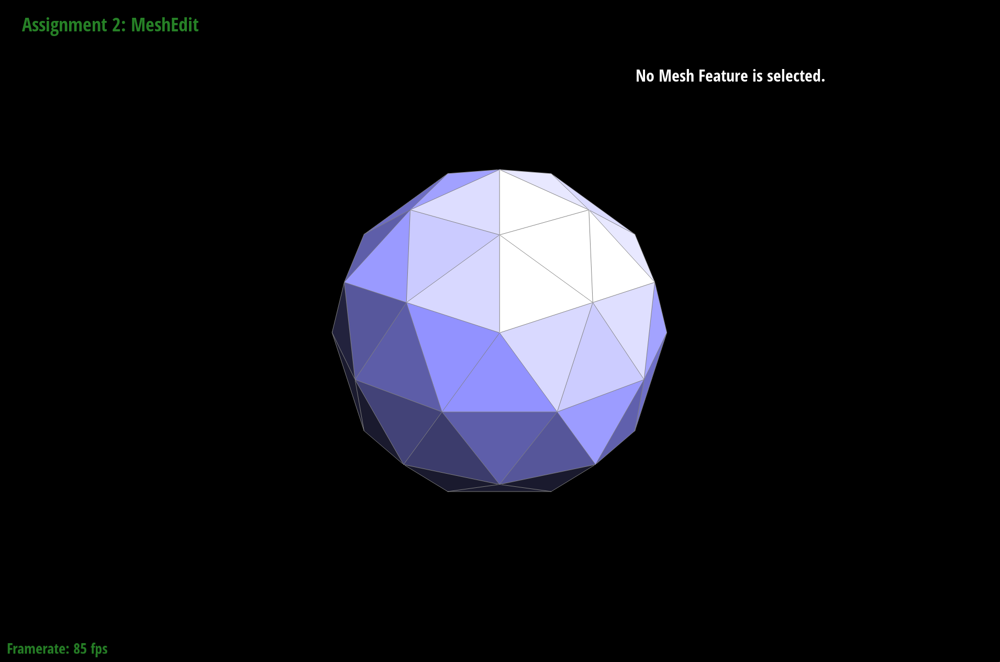

teapot.dae with flat shading. |
teapot.dae with phong shading. |
In this assignment, we built Bezier curves and surfaces using the de Casteljau subdivision algorithm, developed triangle meshes modification methods, and implemented multiple loop subdivision methods. Our main takeaway was how intricate geometric modeling and mesh manipulation are—we spent quite some time debugging the implementations for edge flip, edge split, and mesh upsampling. Nonetheless, we had tons of fun playing around with the tools we created!
de Casteljau's algorithm Description: This algorithm works by using the points defining the
Bezier curve as guiding points, and calculates successive linear interpolations at these points until a
single point is found, which can then be varied by changing the t parameter to fully capture
points along the line. In this sense, de Casteljau's algorithm can be thought of as recursive, where the
input is the current bounding points and the output is the next linearly-interpolated bounding points
until only 1 point remains. This recursive step was essentially the code in evaluateStep,
which used the helper function lerp on all consecutive pairs of vertices to go from n points to n-1 points.
Vector2D lerp(Vector2D p1, Vector2D p2, double t) {
return (1 - t) * p1 + t * p2;
}
BezierCurve::evaluateStep(std::vectorconst &points) { auto interpolatedpoints = vector (); for (int i = 0; i < points.size() - 1; i++) { interpolatedpoints.push_back(lerp(points[i], points[i + 1], t)); } return interpolatedpoints; }
Below, we provide screenshots of our custom Bezier curve at each evaluation step, as well as slightly different Bezier curve:
t = 0.5. |
|
|
t. |
How de Casteljau algorithm extends to Bezier surfaces: Bezier surfaces
can be imagined as taking multiple 1D curves along the same axis, and then using those resulting
points from the successive curves to perform one last Bezier curve evaluation. In terms of the inputs,
the 2D array controlPoints is treated as rows of 1D curves and evaluated row by row on the parameter
u, which is equivalent to t. This generates 1 final list of points called interpolationsatu,
which is evaluated on parameter v to get the final point on the patch. Interpretation wise,
varying u and v can then be thought of as traversing along different x,y positions of the patch. Implementation-wise,
the only major addition was the function evaluate1D, which actually wrapped and recursively called evaluateStep.
Vector3D BezierPatch::evaluate(double u, double v) const {
auto interpolationsatu = vector();
unsigned int n = controlPoints.size();
for (int i = 0; i < n; i++) {
interpolationsatu.push_back(evaluate1D(controlPoints[i], u));
}
return evaluate1D(interpolationsatu, v);
}
Vector3D BezierPatch::evaluate1D(std::vectorconst &points, double t) const { // TODO Part 2. if (points.size() == 1) { return points[0]; } auto currInterp = evaluateStep(points, t); while (currInterp.size() > 1) { currInterp = evaluateStep(currInterp, t); } return currInterp[0]; }
We provide a screenshot of teapot.bez evaluated by implementation below:
teapot.bez |
Implementation of area-weighted vertex normals: The code to implement the area-weighted vertex normal was split into 2 major components.
The first was collecting all vertices necessary to generate faces to average across, and the second was the perform the actual averaging process.
To collect the vertices, the modified example printNeighbourPositions function was used as shown below.
HalfedgeCIter h = halfedge(); Vector3D originPoint = h->vertex()->position; auto vertices = vector(); do { HalfedgeCIter h_twin = h->twin(); // get the opposite half-edge VertexCIter v = h_twin->vertex(); // vertex is the 'source' of the half-edge, so // h->vertex() is v, whereas h_twin->vertex() // is the neighboring vertex vertices.push_back(v->position); h = h_twin->next(); // move to the next outgoing half-edge of the vertex } while (h != halfedge());
This code snippet iterates through all neighboring vertices and stores them into the vertices vector.
Then, creating each face can be conceptually seen as taking vertices[i], vertices[i+1], and the original vertex.
This is because each face must border the original vertex, and the other two edges must be adjacent to each other.
Finally, the cross-product was used to find the normal vector, which was subtracted from a total vector and normalized at the end.
It was subtracted since we were having issues with a very dark shading, meaning the vector was pointing inwards on the mesh rather than outwards!
Since the length of each normal vector depends on the length of the face defining vectors used, the resulting vector is natually area-weighted.
for (int i = 0; i < vertices.size() - 1; i++) {
auto vec1 = vertices[i] - originPoint;
auto vec2 = vertices[i + 1] - originPoint;
auto normvec = -cross(vec1, vec2);
normalvec += normvec;
}
return normalvec.unit();
We provide screenshots of teapot.dae comparing shading with and without vertex normals below:
teapot.dae with flat shading. |
teapot.dae with phong shading. |
Our implementation of an edge flip consists of the following steps:
if (e0->isBoundary()) {
return e0;
}
// Inner Halfedges
HalfedgeIter h0 = e0->halfedge();
HalfedgeIter h1 = h0->next();
HalfedgeIter h2 = h1->next();
HalfedgeIter h3 = h0->twin();
HalfedgeIter h4 = h3->next();
HalfedgeIter h5 = h4->next();
// Outer Halfedges
HalfedgeIter h1_outer = h1->twin();
HalfedgeIter h2_outer = h2->twin();
HalfedgeIter h4_outer = h4->twin();
HalfedgeIter h5_outer = h5->twin();
// Edges
EdgeIter e1 = h1->edge();
EdgeIter e2 = h2->edge();
EdgeIter e3 = h4->edge();
EdgeIter e4 = h5->edge();
// Vertices
VertexIter v0 = h0->vertex();
VertexIter v1 = h3->vertex();
VertexIter v2 = h2->vertex();
VertexIter v3 = h5->vertex();
// Faces
FaceIter f0 = h0->face();
FaceIter f1 = h3->face();
setNeighbors function to set all pointers related to each half-edge.h0->setNeighbors(h5, h3, v2, e0, f0); h1->setNeighbors(h0, h1_outer, v1, e1, f0); h2->setNeighbors(h4, h2_outer, v2, e2, f1); h3->setNeighbors(h2, h0, v3, e0, f1); h4->setNeighbors(h3, h4_outer, v0, e3, f1); h5->setNeighbors(h1, h5_outer, v3, e4, f0);
v0->halfedge() = h4; v2->halfedge() = h0;
f0->halfedge() = h0; f1->halfedge() = h3;
|
|
|
|
Our debugging journey wasn't too eventful; our initial implementation simply didn't account for all the pointers we had to change. Having an organized diagram of our labeled half-edges, edges, vertices, and faces really helped us pinpoint the pointer bugs.
Our implementation of an edge split (without support for boundary edges) consists of the following steps:
if (e0->isBoundary()) {
return VertexIter();
}
// New inner half edges HalfedgeIter nh0 = newHalfedge(); HalfedgeIter nh1 = newHalfedge(); HalfedgeIter nh2 = newHalfedge(); HalfedgeIter nh3 = newHalfedge(); HalfedgeIter nh4 = newHalfedge(); HalfedgeIter nh5 = newHalfedge(); // New edges EdgeIter ne1 = newEdge(); EdgeIter ne2 = newEdge(); EdgeIter ne3 = newEdge(); // New faces FaceIter nf1 = newFace(); FaceIter nf2 = newFace(); FaceIter nf3 = newFace(); // Midpoint (m) VertexIter m = newVertex(); m->position = 0.5 * (v0->position + v1->position);
setNeighbors function to set all pointers for each of the original half-edges.h0->setNeighbors(nh2, nh3, v0, e0, f0); h1->setNeighbors(nh1, h1_outer, v1, e1, nf1); h2->setNeighbors(h0, h2_outer, v2, e2, f0); h3->setNeighbors(nh4, nh0, v1, ne1, nf3); h4->setNeighbors(nh5, h4_outer, v0, e3, nf2); h5->setNeighbors(h3, h5_outer, v3, e4, nf3);
setNeighbors function to assign all pointers for each of the newly created half-edges.nh0->setNeighbors(h1, h3, m, ne1, nf1); nh1->setNeighbors(nh0, nh2, v2, ne2, nf1); nh2->setNeighbors(h2, nh1, m, ne2, f0); nh3->setNeighbors(h4, h0, m, e0, nf2); nh4->setNeighbors(h5, nh5, m, ne3, nf3); nh5->setNeighbors(nh3, nh4, v3, ne3, nf2);
m->halfedge() = nh0; ne1->halfedge() = nh0; ne2->halfedge() = nh1; ne3->halfedge() = nh4; f0->halfedge() = h0; nf1->halfedge() = nh0; nf2->halfedge() = nh3; nf3->halfedge() = h3;
|
|

|

|
|
Our debugging journey mainly consisted of the following events:
Our implementation of loop subdivision consists of the following steps:
for (VertexIter v = mesh.verticesBegin(); v != mesh.verticesEnd(); v++) {
v->isNew = false;
double u = 3.0 / (8 * v->degree());
if (v->degree() == 3) {
u = 3.0 / 16;
}
v->newPosition = (1 - v->degree() * u) * v->position + u * getOriginalNeighborPosSum(v);
}
for (EdgeIter e = mesh.edgesBegin(); e != mesh.edgesEnd(); e++) {
e->isNew = false;
e->visited = false;
Vector3D A = e->halfedge()->vertex()->position;
Vector3D B = e->halfedge()->twin()->vertex()->position;
Vector3D C = e->halfedge()->next()->next()->vertex()->position;
Vector3D D = e->halfedge()->twin()->next()->next()->vertex()->position;
e->newPosition = 3.0 / 8 * (A + B) + 1.0 / 8 * (C + D);
}
EdgeIter e = mesh.edgesBegin();
while (e != mesh.edgesEnd()) {
EdgeIter nextEdge = e;
nextEdge++;
if (!e->visited) {
VertexIter v = mesh.splitEdge(e);
v->newPosition = e->newPosition;
}
e = nextEdge;
}
e = mesh.edgesBegin();
while (e != mesh.edgesEnd()) {
EdgeIter nextEdge = e;
nextEdge++;
if (e->isNew && e->halfedge()->vertex()->isNew !=
e->halfedge()->twin()->vertex()->isNew) {
mesh.flipEdge(e);
}
e = nextEdge;
}
for (VertexIter v = mesh.verticesBegin(); v != mesh.verticesEnd(); v++) {
v->position = v->newPosition;
}
Below, we provide screenshots of the first 4 upsample operations on cube.dae and torus/input.dae.
|
|

|
|
|
|
|
|

|
|
|
|
|
|
|

|
|
|
We observe that after each loop subdivision, the cube mesh becomes increasingly more rounded as the sharp corners/edges are smoothed away. To reduce the effect of smoothing, we can pre-split a few edges to reduce the distortion effect of the upsampling.
Looking at the previous screenshots of the original cube and its upsampled variants, we notice that the upsampling produces asymmetry along the diagonal of the cube face. This weird effect roots from the mesh asymmetry within each face of the cube. In particular, two of the vertices on each face are connected via a (diagonal) mesh edge and the other two aren't. Due to the weighting of the new vertex positions, the connected ones are closer together compared to the unconnected ones—resulting in shape asymmetry.
To fix this asymmetry issue, we can preprocess the cube mesh by splitting the diagonal edge on each face so that we end up with a symmetric "X" on all faces. Then, upsampling no longer produces any asymmetry. See below for some screenshots of the results.
|
|
|
|
|
|